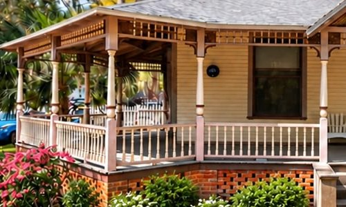
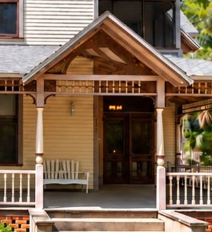

Join the guest list306 NE 3rd Street, Gainesville, Floridacraig@gatorhavenhouse.com jenn@gatorhavenhouse.com
The history of the home
The Albert Blanding House
Built in 1899 in Gainesville’s Duck Pond, and home to one of Florida’s most honored citizens.
An early photograph of the house, with five people on the porch. If you know who they are, we’d love to hear from you.
Since 1899
Built in 1899, the Albert Blanding House is part of Gainesville’s historic Duck Pond neighborhood. Historical accounts credit its construction to Horatio Davis, a judge and two-time Gainesville mayor. Its Queen Anne architecture features decorative gingerbread trim and distinctive Victorian porches that reflect the craftsmanship of the era.
The home was once the residence of Albert Hazen Blanding, who kept ownership until 1958. His life connects the house to Gainesville’s educational roots, to national military history, and to Florida’s conservation legacy.
Seven years before the University of Florida opened its Gainesville campus, this house was already standing.
The house, around 1900
Lieutenant GeneralAlbert Hazen Blanding1876–1970
Soldier, Florida civic leader and conservationist. Named a Great Floridian in 2000.
The house todayConcept: the new upstairs half bath
1899
A judge builds a Queen Anne
Historical accounts credit the house to Horatio Davis, a judge who was twice elected mayor of Gainesville. He built it in the Queen Anne style of the day: gingerbread trim, a fish-scale shingled front gable, and the deep wraparound porches that still define it. Davis died in 1900, the year after it was finished.
1900
Albert Blanding moves in
By 1900 the house was home to Albert Hazen Blanding, then in his twenties. He had grown up in Gainesville, graduated first in his class from East Florida Seminary, a predecessor of the University of Florida, and enlisted in the Gainesville Guards. Local accounts place him here from 1900 to 1910, and he kept the house until 1958.
1917
A general from NE 3rd Street
Blanding’s career took him from the Florida National Guard to France in World War I, and then to the head of the National Guard Bureau in Washington.
Albert Hazen Blanding1876–1970
1894Graduates first in his class from East Florida Seminary in Gainesville
World War ICommands an infantry brigade in France and receives the Distinguished Service Medal
1936–1940Chief of the National Guard Bureau, appointed by President Franklin D. Roosevelt
1939Camp Blanding, Florida’s National Guard training center, is named in his honor
1940sHelps establish Everglades National Park
2000Named a Great Floridian by the Florida Department of State
1980
A protected neighborhood
The Blanding family’s ownership ended in 1958. In 1980 the Duck Pond was listed on the National Register of Historic Places as the Northeast Gainesville Residential District, recognizing more than two hundred of its historic buildings, this one among its neighbors.
2026
A new chapter
We bought the house in 2026 to share it with Gator families. We’re keeping as much of its character as we can, and adding the comforts a modern stay needs. Our hope is to become your home away from home throughout your Gator’s years at UF.
— Craig and Jenn
Then and now
What has lasted, and what has changed
Put the early photograph next to the house today and you can read 127 years of change.
ThenNow
Still here
The wraparound porch, with its gabled corner roof
Turned porch posts and a decorative frieze under the porch roof
Clapboard siding and the tall second story
A picket fence, though today it runs along the side yard
Since changed
A second-floor balcony once sat above the porch
Louvered shutters framed the windows
The picket fence ran along the street
The architecture
Queen Anne, in the details
Queen Anne houses were the high style of the 1880s and 1890s: asymmetrical, ornamented, and built around the porch. Three details to look for when you arrive.
Fish-scale shingles
Rows of rounded shingles fill the front gable, around a small arched attic window.

Gingerbread trim
Turned posts and a spindle frieze run the length of the wraparound porch.

The porch gable
A gabled roof marks the front steps, framing the way in.
Help us tell the story
Do you know this house?
We’re still piecing together who lived here over the last 127 years. If you have an old photo, a family name, or a story from the neighborhood, please write to us. We’ll share what we learn here.